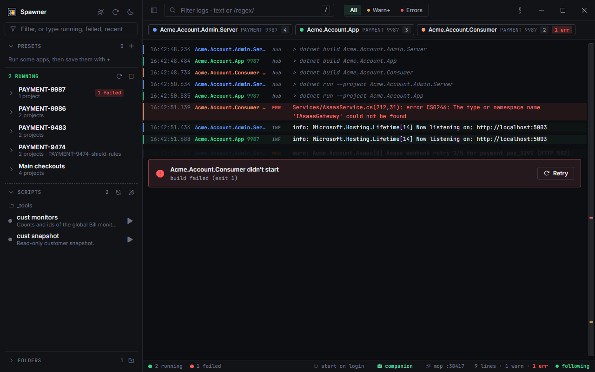
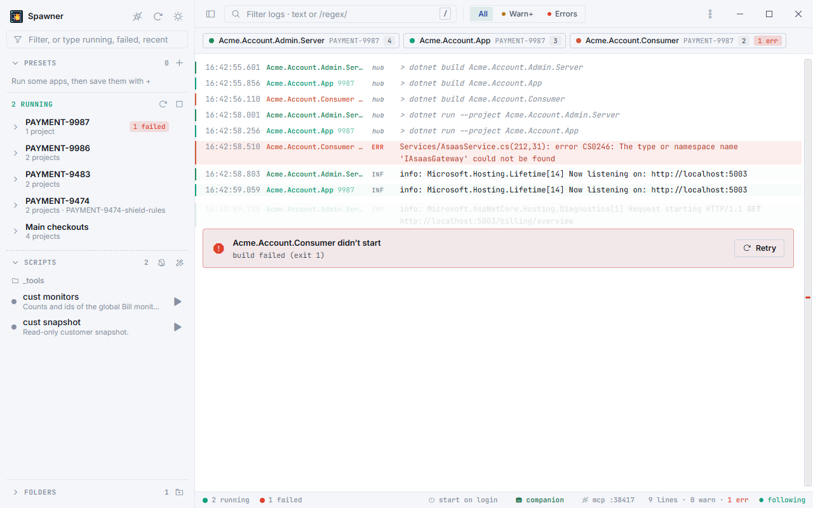

Spawner × T3 Code: revised direction (B2)
B2 · Review-first worktree cockpit recommended
The rail starts with In review: every worktree that has an open PR, with its review and checks state and a Run stack button. To test a PR, you click Run stack on its row. The workspace shows that worktree's stack (apps, ports, run/stop) above its scoped logs.
- Each repo commits its stack in
spawner.stack.json, so a new feature worktree has a stack ready as soon as it exists. - Ports are repo defaults plus per-worktree overrides. You edit them inline, and agents set them with
hub_set_port. - PRs come from
gh. T3 is used for one thing: an optional link to the thread. Spawner makes one call per repo every 60 s and registers nothing.
Rejected: chat in Spawner (no transcript, composer or conversation pane), the kanban board (C), registering each worktree as a T3 project, and the "Needs you" and agent-status queue.
Open B2 → Implementation notesEarlier explorations (superseded)
The first round is kept below for reference. A and C are no longer recommended. B was the base for B2: B2 keeps B's worktree rail and scoped logs and drops the thread column, the composer, Fix with agent and the "Needs you" section.
Round 1Spawner × T3 Code: three ways to show the work
Spawner shows apps and their output, but the work is a task: a worktree, a few repos, an agent thread in T3 Code and a PR. Each mockup below adds T3 Code to Spawner in a different way. All three use the same data and the same simulated T3, so you can compare them: three worktrees, one build failure, one thread running, one PR in review. T3 can be switched to missing, down, slow or unregistered.
Open a mockup and press DEMO (bottom left) or the ` key to jump between scenarios: morning, failure → fix, waiting for you, send log lines, day-to-day, the four degraded T3 states, the light theme and the 720 × 560 fold. Deep links also work: #fix, #waiting, #send, #mode=down, #narrow, #theme=light.
Today
The sidebar shows worktree → projects → apps, next to one merged log. Spawner knows nothing about T3. The only way to recover a failed app is Retry, and the only way to hand logs to an agent is copy and paste.


The three approaches
A · Cockpit safest
Optimizes for: keeping today's muscle memory. The tree and the merged log stay. A Work panel on the right shows the selected worktree's threads, the conversation and a composer. Fail cards in the log get Fix with agent.
- Each worktree in the tree has a thread line: "waiting for you · Fix CS0246…", plus the PR chip.
- Nothing moves, so it is the easiest to ship and to undo.
- You still scan the tree to find what needs you. The task is split across two places: the tree (apps) and the panel (agent).
- At 720 px both side columns turn into drawers over the log.
B · Mission control fits the workflow best
Optimizes for: answering "what do I do next?" The rail lists tasks (a worktree and its thread), sorted by who has to act: Needs you, Agent working, Apps running, In review, Quiet. Each row has app health dots, a PR chip and a one-line reason. Selecting a task opens its workspace: app tiles, fail cards, logs for that worktree only, and the conversation.
- The top of the rail is always the next thing to do. Rows move between sections as builds fail and agents finish.
- Logs are already filtered to the task, so picking lines to send to the agent is quick.
- All apps & logs keeps today's merged view for anyone who wants it.
- Costs: the sidebar is replaced. Presets, pins and batch mark have to move to the palette or the All page.
C · Stage most interactive
Optimizes for: seeing everything at once. Each task is a card in a lane (Needs you, In motion, Parked). A card shows its apps with Run/Stop, a 6-minute log sparkline, the newest log line, the agent's last message and one button for the next step. Cards slide to a new lane by themselves when things change. Clicking a card zooms into a workspace with a filmstrip of the other tasks.
- Most things take one click from the board: Fix with agent, Approve in T3, Retry build, Open :5050, Open PR.
- With 3–5 tasks the board is mostly empty space. At 720 px the lanes become a carousel.
- The zoomed view is B's workspace, so C is B plus a board. It also needs
thread showfor every lead thread, which means more polling. - The mockup has no merged "all logs" view.
Actions per task
Clicks starting with no task selected, counted in the mockups. "Today" is estimated from the current app plus T3 Code.
| Task | Today | A · Cockpit | B · Mission control | C · Stage |
|---|---|---|---|---|
| See what needs you | scan the tree; agent state isn't shown | scan the tree (chips + thread lines) | 0 · top of the rail | 0 · first lane |
| Failed build → an agent is on it | ~7 + switch app (select, copy, T3, project, new thread, paste, send) | 2 · Fix with agent, Start thread | 3 · task, Fix, Start | 2 · Fix on the card, Start |
| Agent waiting for permission | only visible in T3 | 1 + approve in T3 (toast, badge) | 1 + approve in T3 (Needs you row) | 1 + approve in T3 (card button) |
| Agent finished → retry the build | notice it in T3, come back, Retry | 1 | 1 (2 from another task) | 1 from the card |
| Send log lines to a thread | ~6 + switch app | 4 · click, shift-click, Send to thread, Send | 4 · logs already scoped to the task | 5 · zoom first |
| Switch to another task's thread | in T3 | 1 | 1 (Alt+1…9) | 1 (board or filmstrip) |
| Start / stop an app, open its port | 1 | 1 | 1 (2 from another task) | 1 from the card |
| Open the task's PR | GitHub | 1 · chip in the tree | 2 · task, chip | 1 · card button |
| Read every app's log merged | 0 | 0 | 1 · All apps & logs | not in the mockup |
| T3 offline → recover | n/a | 1 · Open T3 Code | 1 | 1 |
Tradeoffs
| A · Cockpit | B · Mission control | C · Stage | |
|---|---|---|---|
| Fits task-based work | partly: apps and agent sit side by side | the task is the unit | the task is the unit |
| Change for current users | small | new navigation; All page keeps the old view | new home screen and zoom model |
| Front-end effort | panel + fail-card states + 2 dialogs | new rail, scoped LogPane, move presets/batch | B + board, animation, sparklines |
| T3 polling load | list per project; show for the open thread | same as A | show for every lead thread |
| Without T3 | today's app plus one status line | rail still sorts by failed and running apps | cards lose their activity line |
| At 720 × 560 | two drawers over the log | one drawer + Logs/Thread tabs | lane carousel; zoom uses tabs |
| Fits the companion window | no change | a task row is a ready-made companion line | a card is a ready-made companion tile |
Round 1 recommendation (superseded by B2)
Make B the target layout, but ship the T3 integration first in the layout we have today. Spawner already tracks the things that decide what's next (failed builds, running apps), and T3 adds the rest (waiting for you, agent finished, PR in review). B is the only layout that sorts by all of it, so the next action is always at the top of the rail without scanning. It keeps the log as the main surface, and "All apps & logs" keeps the merged view.
A is a good first step, not the end state. Its work (T3 detection, Fix with agent on fail cards, Send to thread, thread lines in the tree) is the same code B needs, so slices 1–4 in notes.md ship into today's sidebar and carry over unchanged. Swapping the sidebar for the task rail is the last step, after presets and batch mark have a new home.
C's zoomed view is the same as B's workspace, and its board adds animation and more polling. With the usual 3–5 tasks, B's rail already gives the same overview. The C card works better in the companion window, as one tile per task at the screen edge, than as the main screen.
How it was checked. All three mockups were run in headless Chromium at 1280 × 800, dark and light, with no console errors. The full fix flow was run in all three: failed → Fix with agent → waiting → approved → completed → Retry build → running. In C the card also changed lanes by itself. Screenshots are from those runs.
Not covered. T3 latency, timeouts and output shapes are simulated from the CLI contract in the brief; none of this has run against the real t3. The cost of each t3 process on Windows has not been measured. The companion window and tray are not mocked. The baseline screenshots come from the dev mock backend, not real repos.